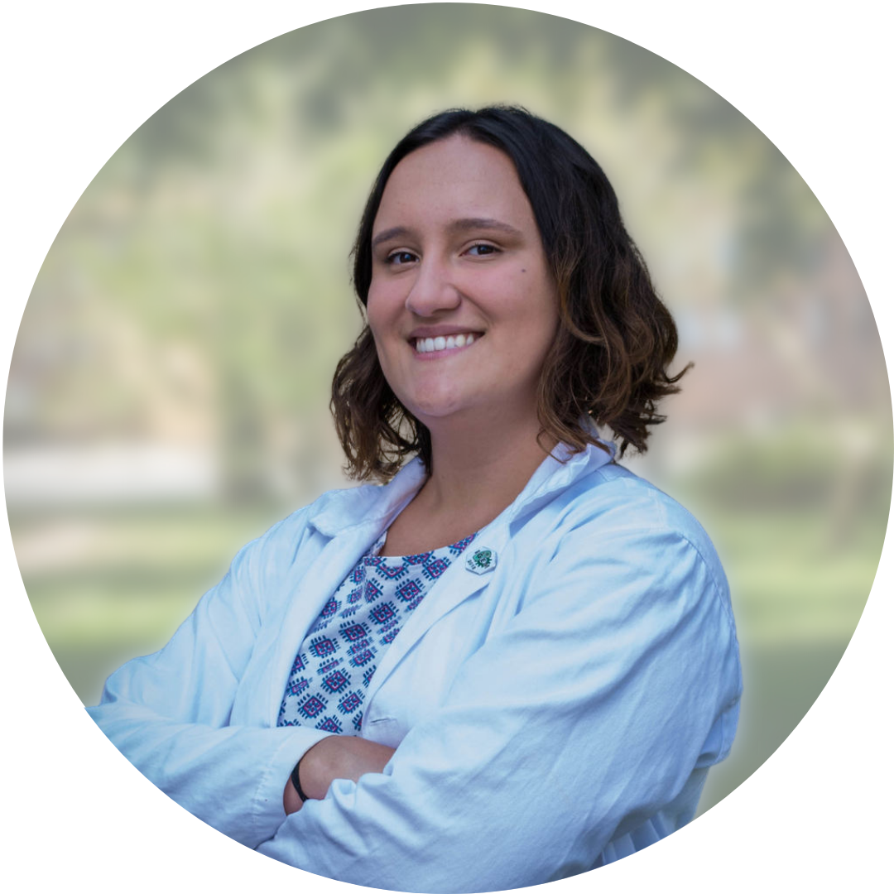
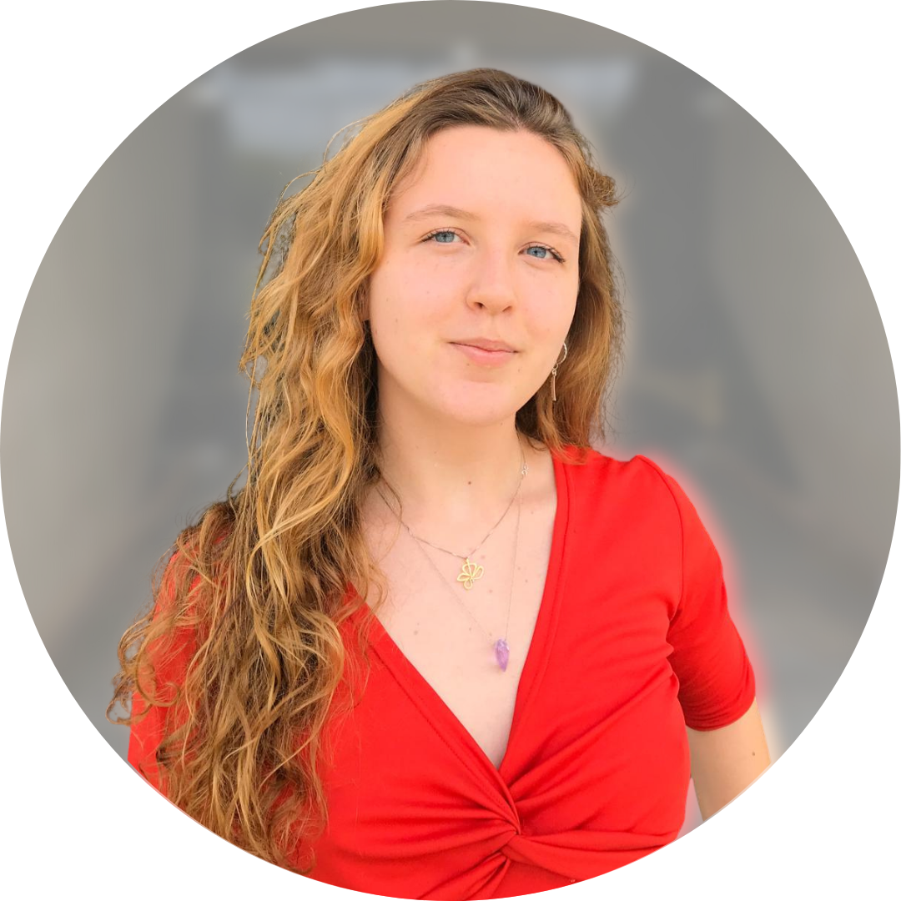
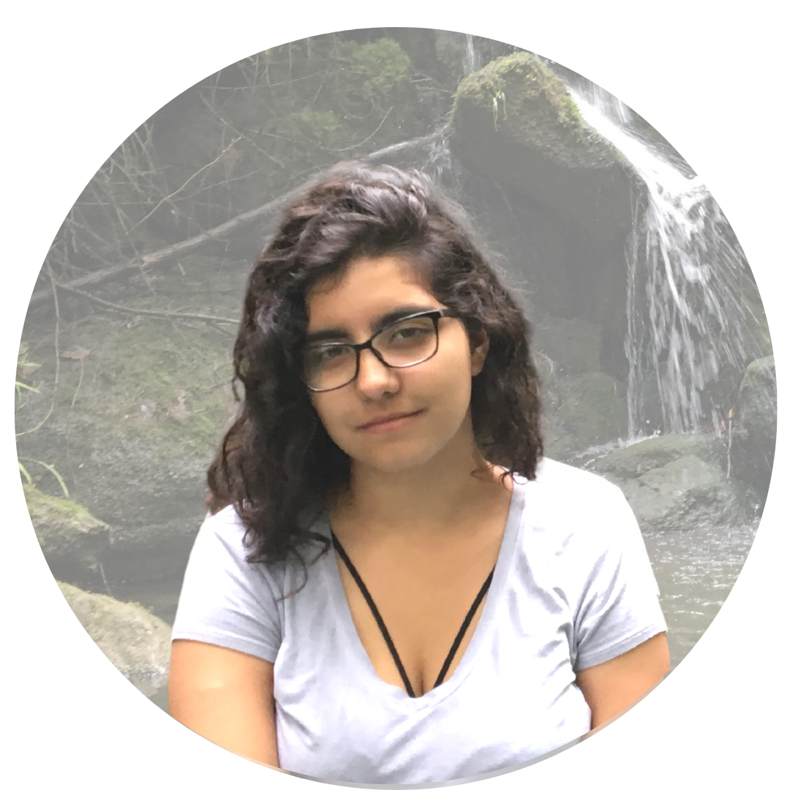
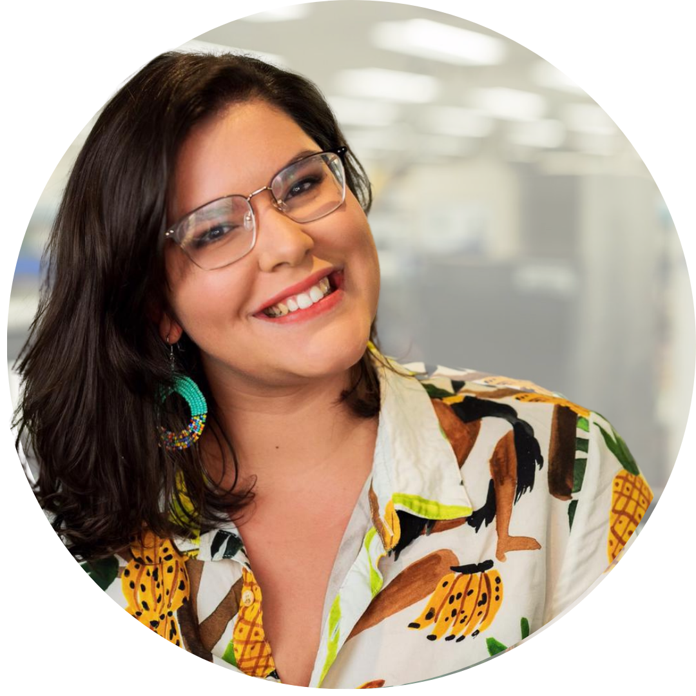

ABOUT US
WHITE PAPER
EXECUTIVE COMMITTEE
SynBio BR is an ecosystem made to connect and empower the new generation of bioengineers in Brazil.
Presentation
When it comes to biodiversity and biotechnology, Brazil is a powerhouse. We are the nation of bioethanol, agriculture, green chemistry, vaccine manufacturing, biocosmetics, unique flavors, and vibrant colors. From the Amazon to the Pampa, from the Pantanal to the Caatinga, from the Cerrado to the Atlantic Forest, our biomes are a source of precious resources and powerful innovation. Synthetic Biology can accelerate Brazilian technological, economical, and social development. We want to build a future in which our community is an international reference. We have the potential to be the connection point between frontier technology and nature conservation, scientific advancement and ethics, innovation and equality, and private and public spheres. Brazilian biotechnology, advanced by the Synthetic Biology approach, has the potential to be a leader in the global agenda for the sustainable development of our planet as a whole. Our strongest aim is to connect you to this new approach.
Made in Brazil.
Vision
We are a network connecting enthusiasts, dreamers, students, scientists, entrepreneurs, and leaders who believe in the potential of Brazilians in Synthetic Biology. We share the dream of building a future in which Synthetic Biology is a tool for scientific, technological, and social development in Brazil and Latin America. We believe that the intersection of engineering principles and the power of our national biodiversity and bioeconomy will be the gear that will definitely transform the Brazilian industry and provide deep social impact and sustainability. With that, we want to build an engaged community that drives and leads the national strategic development programs of the future. For that, we are profoundly engaged in nationalizing the United Nations Sustainable Development Goals.
With a connected community, we can get there.
Our Values
CONNECT
to build the Brazilian innovation ecosystem.
We seek to foster a fertile ground for the development of innovation and technology to support a 100% Brazilian biotechnology. Hence, our ecosystem aims to gather academia, industry, and the community around national demands and challenges, connecting sectors, people, and ideas to catalyze Synthetic Biology innovation on a national scale.
EMPOWER
to democratize and encourage the development of Brazilian Synthetic Biology.
We seek the democratization of Synthetic Biology through the creation and expansion of multiple programs and action fronts. Beyond socioeconomic levels and among all the regions of our continental country, we create resources, spaces, and opportunities. Cutting-edge science is a Brazilian thing.
COLLABORATE
to accelerate innovation and foster partnerships.
We see collaboration as a powerful tool to accelerate the Brazilian Synthetic Biology ecosystem. We believe in the potential of fostering strategic partnerships that symbolize our national diversity and stand for the economic and technological potential of Brazil. Collaboration is a fundamental pillar of SynBio BR because we believe it is a method that catalyzes progress, development, and innovation.
DIVERSIFY
to guarantee the inclusion of all the colors of Brazil.
We seek to ensure that everyone has an active voice in SynBio BR. We believe that SynBio BR is an ecosystem for women, LGBTQIA+, POC, indigenous people, and any other advocate. A future of sustainable, economic, and social development is only possible with diversity and inclusion. A diverse team ensures that the many perspectives, realities, and demands of Brazil are represented.
REPRESENT
to create safe spaces that motivate participation, engagement, and leadership.
We seek to build an association in which our engaged community directs its own future. Creating structures to represent the many fields that make up Brazilian Synthetic Biology is a collective task, which demands the participation of its advocates on different action fronts.
REVOLUTIONIZE
to believe in our national power.
We seek to robustly connect Brazil to its greatest wealth: biodiversity, biotechnology, and bioeconomy. SynBio BR believes that a community that is passionate about its own potential can break paradigms. Synthetic Biology can accelerate the development of numerous technologies with deep social impact. To grow, we need to believe. Made-in-Brazil biotechnological products will be an international reference seal.
To develop Brazilian technologies and resources
at the frontier of knowledge
at the intersection between bio and tech.

CIBELE ZOLNIER
Biochemical Engineering Undergraduate at USP | Coordinator at After iGEM | E-mail: cibele.nascimento@usp.br

ISIS BOTELHO
Bioprocess Engineering Undergraduate at UFRJ | Director of Serologic Diagnostics Sector at Osiris Rio UFRJ | E-mail: isisbotelho@eq.ufrj.br
GIOVANNA MAKLOUF
Biotechnologist | Bioinformatics MSc student at Brazilian National Cancer Institute | Instructor at SynBio Amazonas | E-mail: giomaklouf@gmail.com

HELOÍSA OS BOLL
Biotechnology Undergraduate at UnB | SynBio Lab UnB | After iGEM E-mail: heloisaboll@yahoo.com.br
JOÃO PEDRO PRESTES
Bioprocess and Biotechnology Engineering undergraduate at UTFPR | Co-founder of the CONACOM competition - Email: joao.pedro.vp@hotmail.com
JIMMY HAYDEN-LINHARES
Biotechnology Undergraduate at UFAM | SynBio Amazonas E-MAIL: haydenlinhars@gmail.com

LUIZA ZUCCHI HESKETH
Biological Sciences Undergraduate at UNICAMP| Paleoclimatology researcher at Geosciences Laboratory - Email: luuhgomes98@gmail.com

MARIA ASTOLFI
Strain Engineer, Ginkgo Bioworks | Coordinator, iGEM Design | Co-founder, SynBio Amazonas Brazil - E-mail: mctastolfi@gmail.com
YALA SAMPAIO
Biomedical Science Undergraduate at UFMG | Co-founder SynBio Club at UFMG - E-mail: yala-sampaio@ufmg.br